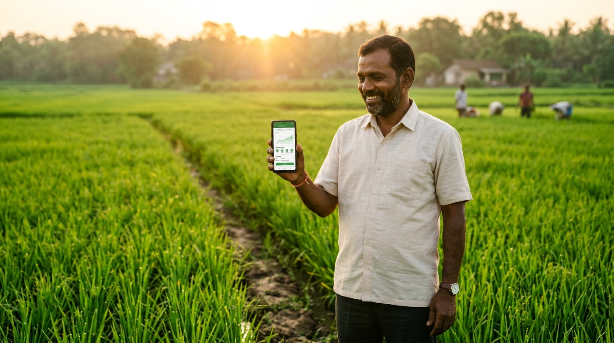
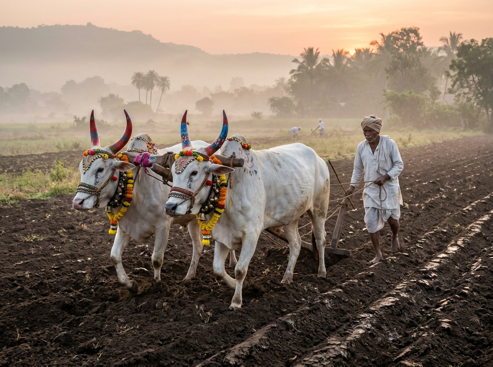
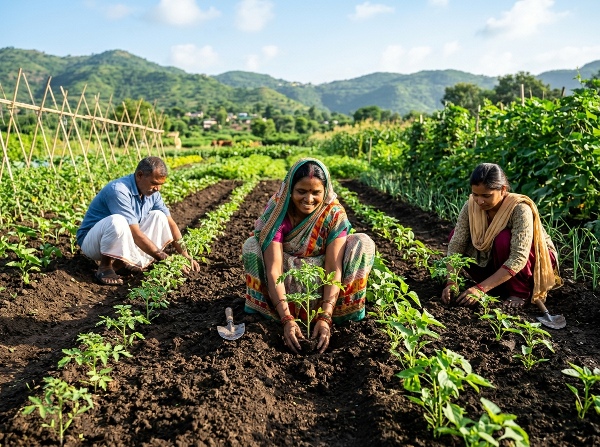
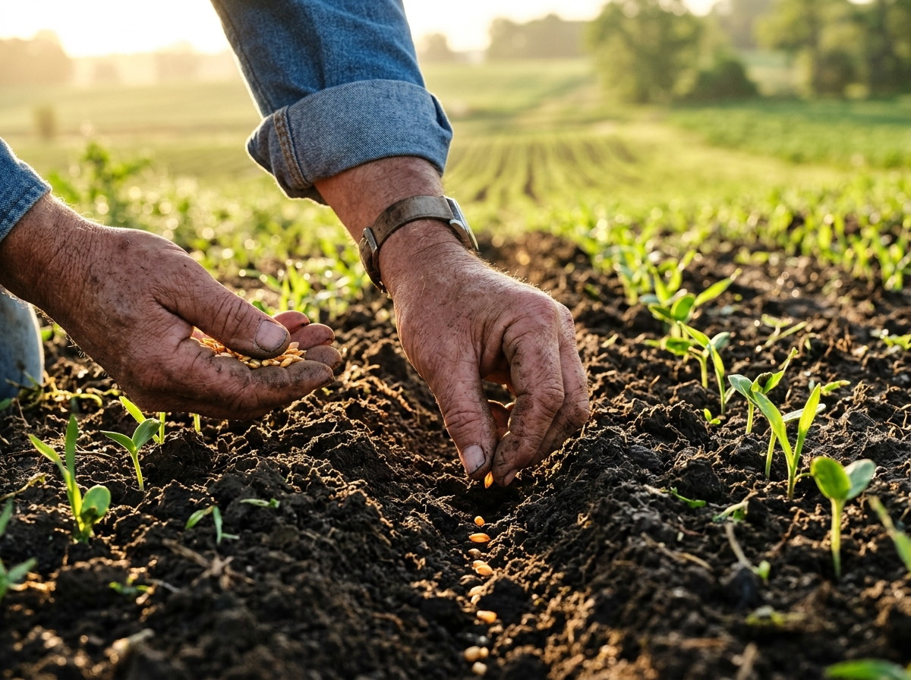
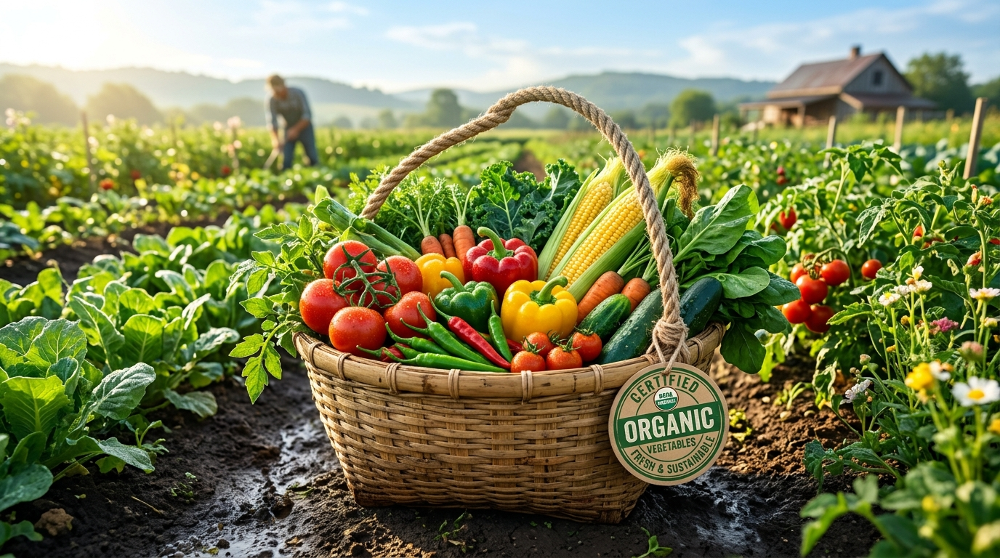
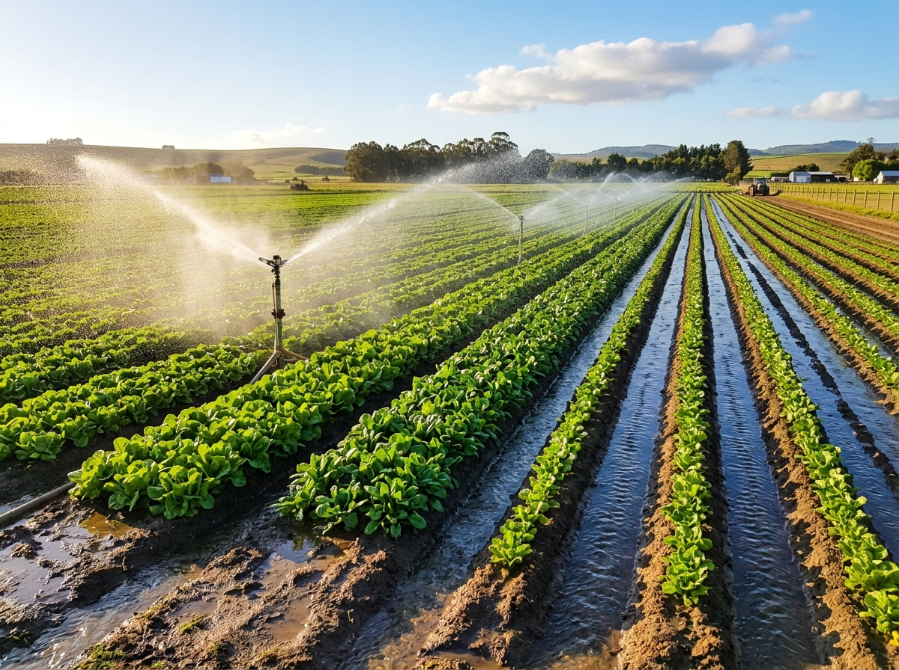
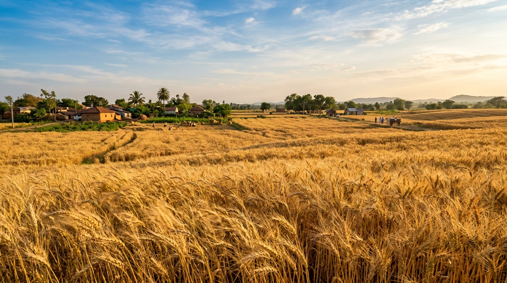

भाषा निवडा / Select Language
Farmer App — पेरणीपासून कापणीपर्यंत प्रत्येक टप्प्याचे फोटो काढा, नोंद ठेवा आणि सेंद्रिय शेतीचे प्रमाण मिळवा.

सहज वापर, स्थानिक भाषा, आणि संपूर्ण शेती प्रक्रियेची नोंद — सगळं एकाच App मध्ये.
प्रत्येक शेती टप्प्याचे फोटो काढा — नांगरणीपासून सोंगण्यापर्यंत. कॅमेरा किंवा गॅलरी वापरून थेट अपलोड करा.
१० टप्प्यांच्या पूर्ण नोंदीवरून सेंद्रिय शेती प्रमाण मिळवण्यास मदत. ग्राहकांचा विश्वास वाढवा.
मराठी, हिंदी आणि इंग्रजी — तुमच्या आवडीच्या भाषेत वापरा. भाषा बदलणे अतिशय सोपे आहे.
शेतकरी आणि अधिकारी दोघेही वेगळ्या Account ने Login करू शकतात. प्रत्येकाला योग्य माहिती.
OTP द्वारे सुरक्षित Login. Aadhaar नंबर वापरून रजिस्ट्रेशन — कोणत्याही password ची गरज नाही.
सर्व १० टप्पे एका सुंदर नकाशाप्रमाणे पहा. कोणता टप्पा पूर्ण झाला ते रंगाने लगेच कळते.
Photograph every crucial agricultural milestone and securely archive it on the Farmer App cloud.

Capture field plowing photo

Record plant sapling placement

Document seed sowing stage

Log organic fertilizer application
Proof of weed control spraying
Record ridge and furrow shaping

Document field water irrigation
Weed removal photo log

Documenting crop harvest yield
Grain threshing and grain storage
महाराष्ट्रातील आणि भारतातील कोणत्याही पिकाची नोंद Farmer App मध्ये सहज ठेवता येते.
Farmer App वापरणाऱ्या शेतकऱ्यांनी प्रत्यक्ष शेतात काढलेल्या नोंदी — सेंद्रिय शेतीचा प्रत्येक टप्पा.

Farmer App मध्ये प्रत्येक शेती टप्प्याचा फोटो जतन करा — हे तुमच्या सेंद्रिय प्रमाणपत्राचा आधार आहे.
 Step 02
Step 02
 Step 03
Step 03
Farmer App उघडा, Aadhaar ने Register करा आणि पहिला शेती फोटो काढा.
App उघडा